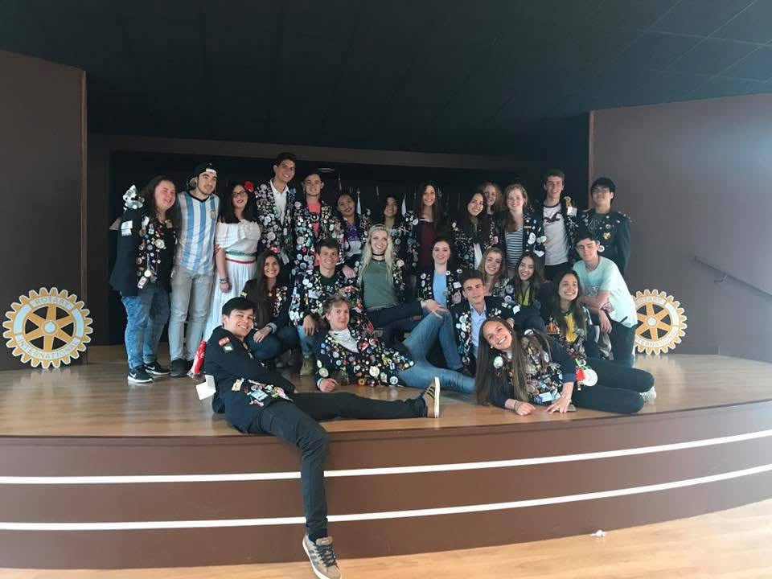

ROS 2 · Gazebo · Mobile robotics
Modular Swarm Explorer
Modular mobile robots for docking, navigation and mapping in simulation.
View project repository ↗Watch motor control video ↗With a background in mechanical engineering, I’m pursuing an M.Sc. in Artificial Intelligence and Robotics at Hof University. I’m especially interested in machine learning, computer vision, and autonomous systems—where intelligent software meets the physical world.

Modular mobile robots for docking, navigation and mapping in simulation.
View project repository ↗Watch motor control video ↗Flight tests, hand motion control and hardware troubleshooting.
In progressView project repository ↗
3D printed cable driven hand developed from calculations to assembly.


Environmental asphalt proposal developed in an international STEM program.
Open project certificate ↗Open presentation ↗Autonomous aerial monitoring and reliable decision making.
In progressView project repository ↗Convolutional neural network trained to classify CIFAR 10 image categories.
View project repository ↗Hands on Arduino exercises with keypad inputs, sensors, servo and LED control.
View project repository ↗SECOM manufacturing data case study using preprocessing and failure detection metrics.
View project repository ↗
Visual comparison of SVM kernels with cross validated optimization.
View project repository ↗Asociación de Robótica Aplicada
Open certificate ↗M.Sc. studies at Hof University of Applied Sciences
Open diploma ↗View diploma modules ↗
Shared my experience as an international student at Hof University.
Volunteered to create a welcoming space for students.

Built an international learning network with mentors and peers.

I started a running club that brings students together through regular runs and shared race goals.
I also created a swimming club for an active and welcoming student community.